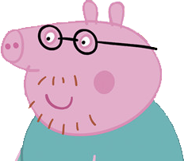
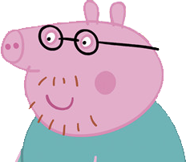

今天是个阳光明媚的早晨
猪爸爸正在看他的报纸
 



佩奇试了一下↓


佩奇来到了厨房
猪妈妈正在做饭


猪妈妈试了一下↓
猪妈妈也会吹口哨
猪妈妈会吹也许是因为年纪大
于是她上楼找到了乔治


乔治试了一下↓

乔治也会吹口哨
乔治会吹也许是因为年纪小
所以她给苏西打了个电话
（苏西与佩奇年龄相仿）


开始你的表演↓
明明说不会
还吹的那么有节奏
佩奇表示很生气
并狠狠的挂了电话
姐妹一生一起走
谁吹口哨谁是狗
——鲁迅

——佩奇
佩奇是一只非常可爱的小猪，5岁了，她和她的爸爸、妈妈以及弟弟乔治生活在一起。她最喜欢跳泥坑，最喜欢吃的是意大利面和巧克力蛋糕，最喜欢扮成小仙女公主，最喜欢喝橙汁，也很喜欢去她的爷爷奶奶家玩。
乔治是佩奇的弟弟，已经上幼儿园了性格非常像现实中的小男孩，活泼调皮，喜欢吃意大利面和巧克力蛋糕，喜欢喝果汁，最最喜欢的是恐龙，自己有个恐龙玩具，无论是谁问他问题，他总回答“恐龙！”，最喜欢跳泥坑。

猪爸爸是佩奇和乔治的爸爸，会开车，也会做饭。有时有点迷糊，但非常疼爱佩奇和乔治，也非常喜欢逞强，经常说自己是某方面的专家（实际上他基本全都不擅长），是跳泥坑的世界冠军。
猪妈妈是佩奇和乔治的妈妈，是个非常温柔贤惠的妈妈，主要是在家里给全家做饭做家务，也工作，但是是在家里工作。
猪爸爸 佩奇 乔治 猪妈妈
幸福
一家
人
搞笑
一家
猪